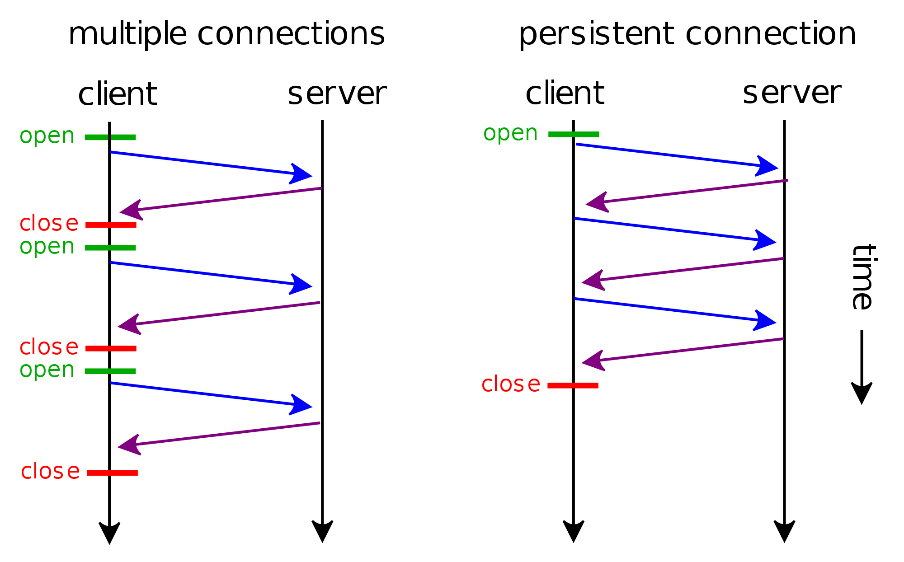
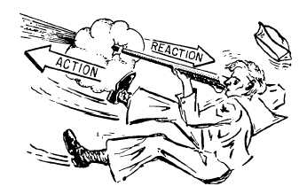
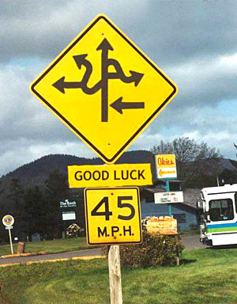
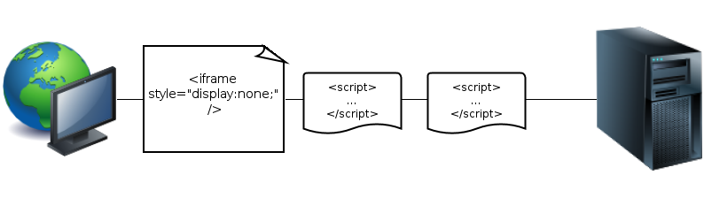
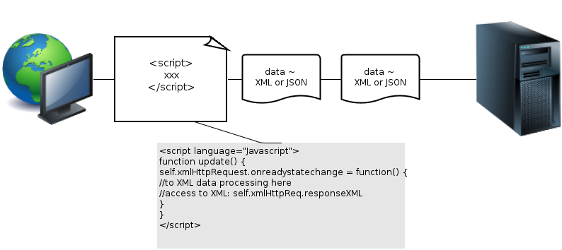
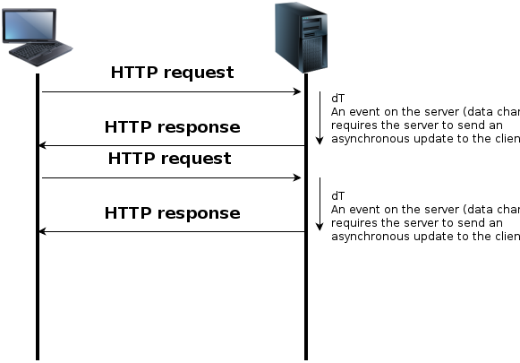
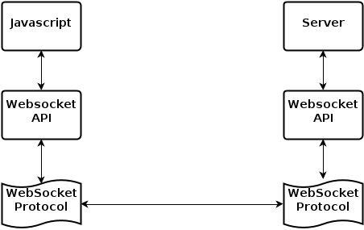
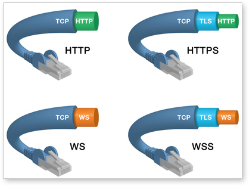
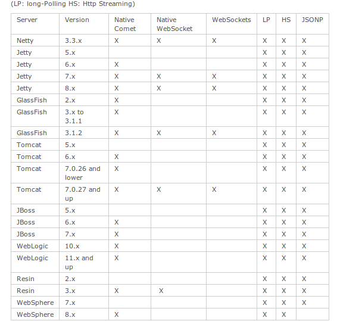
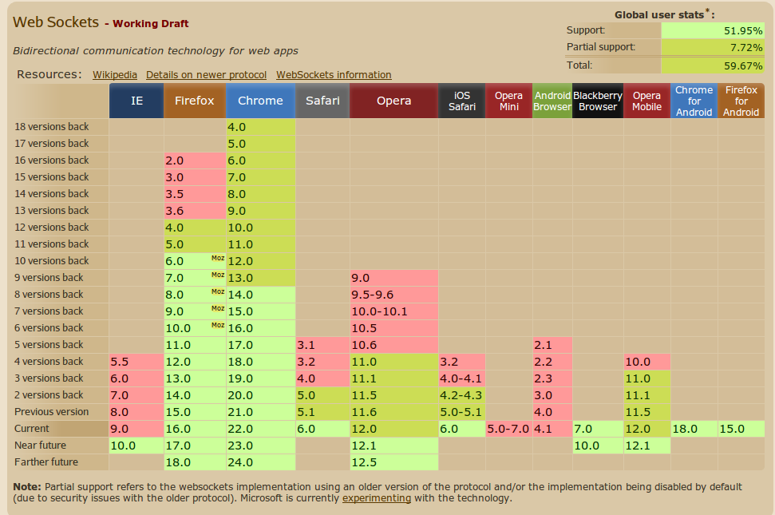

Event Driven Webapps
@gautamNitish, gautamk.com
Agenda
- Persistent Connections
- Comet
- Websockets
- Gotchas
- JVM Offerings
- The Competition
- Questions ?
Persistent Connection
HTTP Keep Alive
Single TCP connection Multiple HTTP RequestsHTTP Paradigm
courtesy http://en.wikipedia.org/w/index.php?title=File:HTTP_persistent_connection.svg
Newton's 3rd Law
Purpose of HTTP Keep alive
- Reduce the overhead of the 3 way handshake

courtesy http://www.tcpipguide.com/free/t_TCPConnectionEstablishmentProcessTheThreeWayHandsh-3.htm
Server cannot push data
Comet
Its a Paradigm
- Multiple HTTP connections
-
Streaming
- Hidden Iframe
- XHR
-
Polling
- Long Polling
- Script Tag Long Polling
Multiple HTTP Connections
The client opens an HTTP connection to the server, the server opens a connection to the client. Example: XMPP protocol.
Good Luck with the server implementation !
Hidden Iframe
Browser dependent Behaviour
Streaming XHR
long polling
Script tag Long Polling
Same techniques as above, but the script code is embedded in <script> tags that can be filled with code from another second level domain.
WebSockets
Advantages
- Full-Duplex
- Bidirectional
- Single Socket
- Upgrades HTTP
- Native
GET /text HTTP/1.1
Upgrade: WebSocket
Connection: Upgrade
Host: www.websocket.org
…
HTTP/1.1 101 WebSocket Protocol Handshake
Upgrade: WebSocket
Connection: Upgrade
…
Data Frames
Minimal Over Head once connection is established
-
Text Frames
- Start with 0x00
- End with 0xFF
-
Binary Frames
- Use Length Prefix
WebSocket Security
- HTTP Compatible
- Same Encryption as HTTPS using TLS/SSL
WebSocket == TCP ! HTTP
The WebSocket protocol was designed as a transport layer for higher-level protocols (like TCP for the Web).
Can transport other protocols like XMPP, AMQP, Stomp etc over the Web, using the standard ports 80/443.
Support for sub-protocol validation via headers
Performance
Sample analysis from websocket.org
-
100,000 clients polling every 1 second
- Network throughput is (871 x 100,000)
- 87,100,000 bytes = 696,800,000 bits per second (665 Mbps)
- 100,000 clients receive 1 message per second
- Network throughput is (2 x 100,000)
- 200,000 bytes = 1,600,000 bits per second (1.526 Mbps)
Comparison

Gotchas
Support - JVM Land Servers
Support - Browsers
JavaScript
- JS clients cannot receive raw binary data because there is no support for byte type
Websocket Protocol Specs
The protocol spec is yet to be finalised so it keeps changing
Websocket Masking
The WebSocket protocol implements data masking. To prevent proxy cache poisoning
The dark side of this is that Security Tools cannot identify it
DoS
- WebSockets have higher connection Limit than HTTP
- Easy to Exploit this to create a DoS attack
- Eg Slowloris attack
WebSocket == TCP ! UDP
Bad Networks and Latency will cost you !
Packets have to wait for Dropped Packets to Reach.
At 1% packet loss about 3% of messages arrive late.
So every subsequent packet is also delayed
Refer http://blog.artillery.com/2012/06/websocket-performance.html For detailed analysis
JVM Offerings
Frameworks
- Play!
- vert.x
- atmosphere
Play!
class ChatRoom extends Actor {
var members = Map.empty[String, PushEnumerator[JsValue]]
def receive = {
case Join(username) => {
// Create an Enumerator to write to this socket
val channel = Enumerator.imperative[JsValue](
onStart = self ! NotifyJoin(username)
)
if(members.contains(username)) {
sender ! CannotConnect("This username is already used")
} else {
members = members + (username -> channel)
sender ! Connected(channel)
}
}
case NotifyJoin(username) => {
notifyAll("join", username, "has entered the room")
}
case Talk(username, text) => {
notifyAll("talk", username, text)
}
case Quit(username) => {
members = members - username
notifyAll("quit", username, "has leaved the room")
}
/**
* Handles the chat websocket.
*/
def chat(username: String) = WebSocket.async[JsValue] { request =>
ChatRoom.join(username)
}
Vert.X
function connectToServer() {
if (!eb) {
eb = new vertx.EventBus("http://localhost:8081/chat");
eb.onopen = function() {
console.log("Connected to chat");
// subscribe to chat address so we can receive messages
setupSubscriptions();
};
eb.onclose = function() {
console.log("Disconnected from chat");
eb = null;
};
}
}
// Send a message to the event bus
function send(address, message) {
if (eb) {
eb.send(address, message);
}
}
function setupSubscriptions() {
if (eb) {
// register to receive any messages sent on the chat address
eb.registerHandler(CHAT_ADDRESS, function(msg, replyTo) {
handleMessage(msg)
});
}
}
Atmosphere
public class ChatAtmosphereHandler extends OnMessage {
private final ObjectMapper mapper = new ObjectMapper();
/**
* Echo the JSON Message we receive.
* @param response an {@link AtmosphereResponse}
* @param message a message of type T
* @throws IOException
*/
@Override
public void onMessage( AtmosphereResponse response,
String message) throws IOException {
response.getWriter()
.write(
mapper.writeValueAsString(
mapper.readValue(message, Data.class)
)
);
}
public final static class Data {
private String message;
private String author;
private long time;
}
}
the competition
- Socket.io
- Tornado
- EM.WebSockets
Socket.io
var io = require('socket.io').listen(80);
io.sockets.on('connection', function (socket) {
socket.emit('news', { hello: 'world' });
socket.on('my other event', function (data) {
console.log(data);
});
});
Tornado
class EchoWebSocket(websocket.WebSocketHandler):
def open(self):
print "WebSocket opened"
def on_message(self, message):
self.write_message(u"You said: " + message)
def on_close(self):
print "WebSocket closed"
EM.Websockets
EventMachine.run {
EventMachine::WebSocket.start(
:host => "0.0.0.0",
:port => 8080)
do |ws|
ws.onopen {
puts "WebSocket connection open"
# publish message to the client
ws.send "Hello Client"
}
ws.onclose { puts "Connection closed" }
ws.onmessage { |msg|
puts "Recieved message: #{msg}"
ws.send "Pong: #{msg}"
}
end
}
The JavaScript to Handle WebSockets
var socket = new WebSocket("ws://host/path/to/resource");
socket.onopen = function(){
alert("Socket has been opened!");
}
socket.onmessage = function(msg){
alert(msg);
}
socket.onclose = function(){
alert("Socket closed")
}
socket.send("Here is my message");
Questions ?
About Me
- I am Gautam
- From Chennai
- I work at Orangescape
- And I made this presentation using Reveal.JS